Some of the most important quantities in international business are not measured, because they cannot be. Absorptive capacity, institutional quality, brand strength, digital maturity — each is meant to be a real property of a firm or a country, each is invoked in explanations, and none of them appears in any dataset. What appears instead is a set of indicators, each a noisy and partial reflection of the thing.
Chapter 7 met this and handled it descriptively: factor analysis found a small number of common factors behind a battery of correlated items. This chapter takes the same idea and makes it a model you can state and test — a set of explicit claims about which indicators measure which construct, and about how the constructs relate to one another.
It does so through three examples, each adding one idea. Nine ability tests that should measure three abilities: a measurement model and nothing else. Seventy-five countries, where industrialisation may bring democracy: arrows between constructs. And a simulated survey of exporting firms, where the true answer is known and you can watch what structural equation modelling (SEM) gains over the shortcut of averaging the items. Each is built the way you should build your own: on paper first, then in one line of text per construct, then in four lines of Python, and only then with numbers.
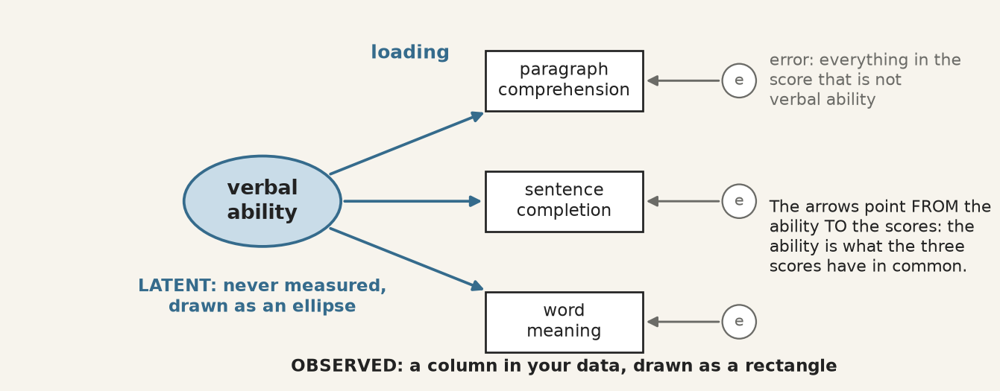
One construct, three indicators. The construct is never measured; it is what the three scores have in common, and the error circles hold everything else in each score.
The apparatus divides into two parts, and keeping them apart is the first thing to learn.
Measurement model — the part that links unobserved constructs to observed indicators. It answers: does this battery of questions measure one thing, and how well does each item measure it? Its coefficients are loadings.
Structural model — the part that links constructs to each other. It answers: does this construct predict that one? Its coefficients are path coefficients, and they are regression coefficients between quantities that were never observed.
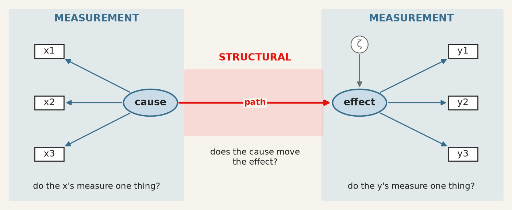
The two halves of a structural equation model. Blue, the measurement models: does each set of indicators measure one thing? Red, the structural model: does one construct move the other? ζ stands for what the path leaves unexplained.
A model can have both, and much of what makes SEM valuable is estimating them jointly: the structural relationships are corrected for the unreliability of the measurement, which a two-step approach of “build a scale, then regress it” does not do.
9.2 Wright’s diagrams, and what a path meant
From the archive · Wright, 1918–1934
Sewall Wright was a geneticist working on the inheritance of coat colour in guinea pigs, and he needed to express something regression could not: a system in which variables cause each other in a specified pattern, some directly and some through intermediaries. He drew it — variables as boxes, causal claims as arrows — and worked out the algebra that lets the correlations be decomposed along the paths (Wright 1934).
Two features of that invention survive intact into every SEM package in use today. The diagram is the model: each arrow is a parameter to be estimated, and an arrow you do not draw is a claim that the effect is zero. And the implied correlation between any two variables is the sum of the contributions along every path connecting them, which is what makes the model testable — it predicts a whole covariance matrix, not a single coefficient.
Wright was explicit that the method could not discover the diagram. It required the causal structure to be supplied from outside, on subject-matter grounds, and it then estimated the strengths and checked the implications. Ninety years of software has not changed that, and the section on equivalent models below is what happens when it is forgotten.
9.3 The language: five symbols and three operators
Wright’s convention is still universal. Observed variables are rectangles, unobserved ones ellipses, a one-headed arrow is a directed effect, a two-headed arrow an unanalysed covariance, and a small circle the error left over.
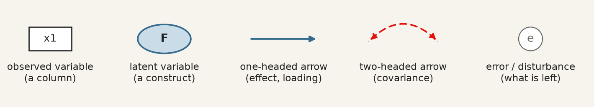
The five symbols of a path diagram. Every SEM figure in every paper is made of these.
Each drawing has an exact translation into text. The notation, standard since lavaan made it so (Rosseel 2012) and used by semopy in Python, is close to readable English:
You draw
You write
operator means
ellipse → rectangles
visual =~ x1 + x2 + x3
=~is measured by
ellipse → ellipse
dem65 ~ dem60
~is regressed on
two-headed arrow
y1 ~~ y5
~~covaries with
error circles
nothing
added by the software, one per indicator
So visual =~ x1 + x2 + x3 asserts that a construct called visual exists, that these three observed scores are reflections of it, and — by what is absent — that nothing else in the model measures it. The corresponding equation for indicator \(j\) of construct \(\xi\) is
with \(\lambda_j\) the loading and \(\delta_j\) everything specific to that indicator: its own content, and its measurement error. This is chapter 7’s factor model written one indicator at a time, and the interpretive move is the same — the construct is what the indicators have in common, and nothing else.
Five words for what you draw. Papers describe the same diagrams in words, and five terms carry most of it.
Term
What it is
On the diagram
Observed variable (indicator)
a column you measured: a survey item, a test score
rectangle
Latent variable (factor, construct)
a concept nobody measures directly, inferred from what its indicators share
ellipse
Exogenous / endogenous
arrows only leave it / at least one arrow points into it
where the arrowheads land
Path
a one-headed arrow, a directed effect read like a regression coefficient; a two-headed arrow is a covariance, with no direction
→ and ↔︎
Error (disturbance)
the part of a variable the model does not explain
small circle with an arrow into the variable
Exogenous and endogenous — an exogenous variable is explained by nothing in the model, like an independent variable; an endogenous one receives at least one arrow, like a dependent variable, and so carries an error term. The distinction is a fact about the diagram, not about the world: a construct that is never measured is endogenous as soon as an arrow points into it, and every reflective indicator is endogenous, because its construct points into it.
Identification. A latent variable has no units, so a scale must be imposed before anything can be estimated. Two conventions exist: fix one loading to 1, which gives the construct the units of that indicator, or fix the construct’s variance to 1, which makes it standardised. Software picks the first by default, which is why one loading in every output has no standard error — it was not estimated. Reading it as “the strongest indicator” is a common and complete misunderstanding.
9.4 What is actually being fitted
The model does not fit the data. It fits the covariance matrix of the data.
Every parameter set \(\theta\) implies a covariance matrix \(\Sigma(\theta)\) among the observed variables, and estimation chooses \(\theta\) to make that as close as possible to the observed \(S\). The simplest case shows why a diagram is a prediction. Standardise everything; two indicators of the same construct share nothing but the construct, so the model says their correlation must be
Every arrow you draw, and every one you leave out, implies a number of this kind for every pair of indicators. The discrepancy between those numbers and the observed ones is what all the fit statistics measure, and the \(\chi^2\) test is a formal test of
\[
H_0: \thickspace \Sigma = \Sigma(\theta) ,
\]
that is, of exact fit. Its degrees of freedom are the number of distinct elements in the covariance matrix minus the number of free parameters: nine indicators have \(9 \times 10 / 2 = 45\) variances and covariances, the three-factor model below estimates 21 parameters, and the 24 left over are what make it testable. A model that says more about the covariances than it has parameters to absorb can be wrong, and therefore can be checked.
9.5 Example 1 · Nine tests, three abilities
The first example asks the measurement question alone: do nine test scores reduce to three abilities, to one general “cleverness”, or to something else? A model with constructs and indicators but no arrows between constructs is a confirmatory factor analysis, and it is where every SEM starts. The data are the classic of the field: Holzinger and Swineford gave nine ability tests to 301 seventh- and eighth-graders in two Chicago schools in 1939. They ship with semopy, so every cell below runs as written, with nothing to download.
Column
Test
Meant to measure
x1 · x2 · x3
visual perception · cubes · lozenges
visual ability
x4 · x5 · x6
paragraph comprehension · sentence completion · word meaning
Step 1 and 2 · Load the data, and look before you model. The correlation matrix is what the model will try to reproduce, so it is the first thing to see.
Run it: the correlations the model has to reproduce
Figure 9.1: The correlations between the nine tests. Three blocks on the diagonal: the groups are visible before any model is fitted.
Three dark squares sit on the diagonal. The textual tests correlate at about 0.7 with each other and 0.1–0.4 with everything else; the visual and speed tests form weaker blocks. If you cannot see your constructs in this picture, no fit index will find them for you.
Step 3 · Draw the model on paper. Each test measures one ability, and the three abilities may correlate. Every missing arrow is a claim: no arrow from visual to x9 says the capitals test has nothing to do with visual ability.
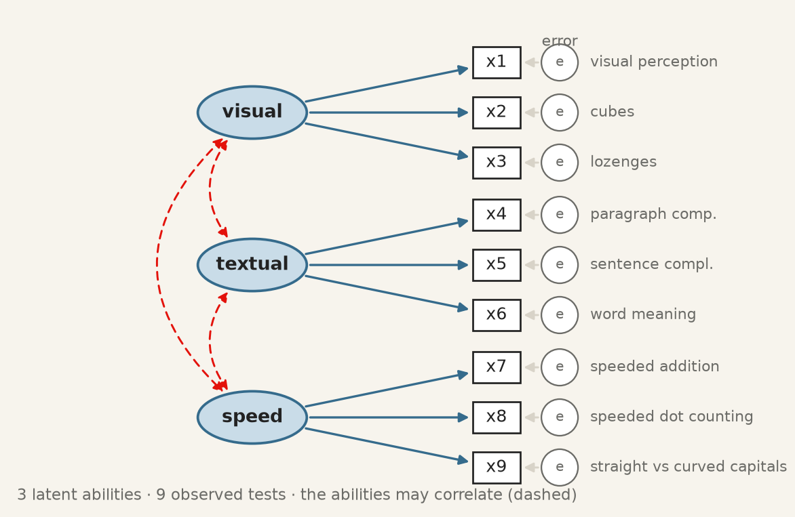
The three-factor model, before any number is estimated.
Step 4 and 5 · Write it as text, and fit it. One line per ellipse. semopy adds the rest: one loading per construct fixed to 1, an error term for each indicator, and covariances among the constructs.
Run it: fit the three-factor model and read the loadings
semopy writes a loading as x2 ~ visual — “x2 depends on visual”, which is what =~ means read from the other side. Estimate is in the indicator’s own units, and the rows equal to 1 with no \(p\)-value are the ones fixed in step 4. Est. Std is the column to read: a standardised loading is the correlation between the indicator and its construct, and its square is the share of the indicator the construct explains.
Step 6 · Put the numbers back on the drawing.
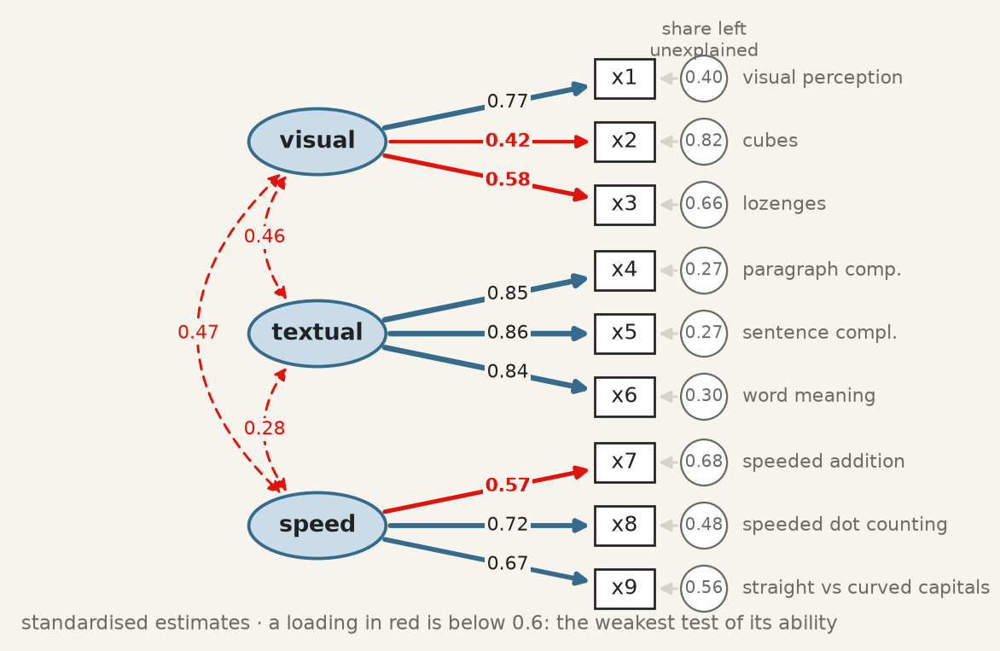
The fitted three-factor model, standardised. Red loadings are below 0.6; the circles hold the share of each test the model leaves unexplained, which is one minus the squared loading.
Textual is measured well, each test sharing about 72% of its variance with the construct. Cubes, x2, is the weak indicator: \(0.42^2 = 0.18\), so 82% of a child’s cubes score is something other than visual ability. Below about 0.4 an item has little to do with the thing it is supposed to measure, and keeping it degrades the construct rather than enriching it.
The rule from the previous section can be checked by hand. x4 and x5 both measure textual, so the model says their correlation is \(0.85 \times 0.86 = 0.73\) — and the correlation in the first figure is 0.73. The three abilities correlate at 0.28 to 0.47: related, but distinct.
Are the abilities really different? “Distinct” is a claim with its own checks, grouped under the name discriminant validity. A factor correlation is the correlation between the constructs themselves, cleaned of measurement error, so it is larger than the correlation between averaged scores would be, and it is the number to judge. Four rules of thumb are in use.
Size. Below about 0.85 (0.80 for the strict) the constructs are distinct. Above it, two names may be covering one thing.
The interval, not the p-value. The p-value printed beside a factor correlation tests whether it differs from 0, which is rarely in doubt. The question is whether it differs from 1, so the 95% interval must exclude 1.
Fornell–Larcker(Fornell and Larcker 1981). The average variance extracted, AVE, is the mean squared standardised loading of a construct: the share of its indicators’ variance it explains. Each construct’s AVE must exceed its squared correlation with every other construct — it must share more with its own indicators than with a neighbour.
HTMT(Henseler, Ringle, and Sarstedt 2014). The heterotrait–monotrait ratio, the average correlation between indicators of two different constructs divided by the geometric mean of the average correlations within each, computed straight from the correlation matrix. Below 0.85 (0.90 lenient). It is now often asked for in place of Fornell–Larcker, which detects overlap poorly.
The cell computes the AVE of each ability and a bootstrap interval for each factor correlation: resample the 301 children with replacement, refit, and keep the middle 95% of 500 refits.
Run it: AVE, and a bootstrap interval for each factor correlation
Every check passes: the correlations are far below 0.85, no interval comes near 1, the HTMT ratios are well under 0.85, and the AVEs (visual 0.37, textual 0.72, speed 0.43) all exceed the largest squared correlation, 0.22. The abilities are distinct. The AVEs say something else as well. The usual standard for convergent validity is an AVE of at least 0.5, and visual and speed fall short: on average their tests carry more noise than ability. That is the weak cubes loading again, seen from the construct’s side.
Two further checks need no computation. The sign should be the one theory predicts — here positive, since children good at one ability tend to be good at the others. And a factor correlation above 1 is not “very similar constructs” but an inadmissible solution, a Heywood case, which says the model is misspecified or the sample too small.
9.6 The fit indices, and what each would have to be
The \(\chi^2\) test is the only one with a null hypothesis, and it is almost never used alone, for a reason worth being honest about: with a large sample it rejects models that are approximately right, and with a small one it fails to reject models that are badly wrong. It is a test of exact fit, and no model is exactly right.
The alternatives are approximate fit indices, and three are conventionally reported together.
CFI — comparative fit index (Bentler 1990). How far the model has moved from a baseline in which all observed variables are uncorrelated, toward perfect fit. Scaled to \([0,1]\); above about 0.95 is the modern convention.
TLI — Tucker–Lewis index, the same comparison with a penalty for parameters, so adding a path that does not help can lower it. Not bounded above by 1 in practice. Above about 0.95.
RMSEA — root mean square error of approximation (Browne and Cudeck 1992). The misfit per degree of freedom, so it rewards parsimony directly. Below about 0.06 is good, above 0.10 poor.
Only \(\chi^2\) is a test. It has a null hypothesis and a sampling distribution. CFI, TLI and RMSEA have neither: they are distances, each measured from a different starting point, and “TLI is significant” means nothing. Since a correct model has \(E[\chi^2] = \mathrm{df}\), all three are built on the excess \(\chi^2 - \mathrm{df}\) or on the ratio \(\chi^2/\mathrm{df}\) against 1. With \(m\) the model and \(0\) the baseline, a model in which no two observed variables correlate,
CFI is the share of the baseline’s excess misfit the model removes, clipped to \([0, 1]\). TLI is the same comparison per degree of freedom, so a parameter that does not earn the degree of freedom it costs lowers it, and it can stray above 1 or below 0, which is why it is called non-normed; a TLI of 1.02 is noise, not a better-than-perfect model. RMSEA needs no baseline: it is the misfit per degree of freedom and per observation.
Those thresholds come from a simulation study (Hu and Bentler 1999) that has been cited tens of thousands of times and whose authors were careful to say they were not proposing universal cut-offs. They are conventions, and the honest use is to report the numbers and the convention together, and let the reader apply their own judgement.
Run it: every fit index of the three-factor model
fit = semopy.calc_stats(model)print(fit[["chi2", "DoF", "chi2 p-value", "CFI", "TLI", "RMSEA"]].T.round(3))
By hand, with the baseline at \(\chi^2_0 = 918.9\) on 36 df and \(n = 301\): CFI \(= 1 - 61.3/882.9 = 0.931\); TLI \(= (25.52 - 3.55)/(25.52 - 1) = 0.896\); RMSEA \(= \sqrt{61.3/(24 \times 300)} = 0.092\). TLI is below CFI because it charges for parameters, which makes it the index to watch when a model gains fit by adding arrows.
A model drawn from a well-established theory of mental abilities, and it does not quite fit. That is a normal outcome, and the useful question is where it misses.
9.7 Where the model misses, and what you may do about it
The model implies a correlation for every pair of tests. Subtracting it from the observed one shows where the diagram is wrong.
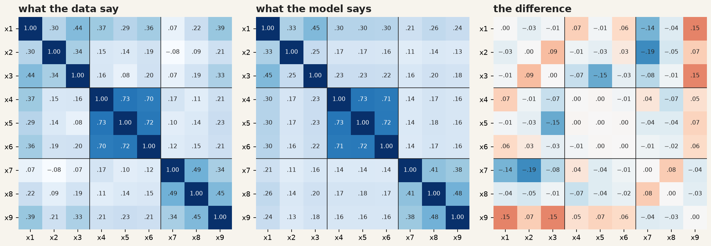
Observed correlations, the correlations the fitted model implies, and their difference. The textual block is reproduced almost exactly; the largest misses are in the last row, where x9 correlates with the visual tests more than the model allows.
x9 correlates with x1 and x3 by about 0.15 more than the model allows. Is there a reason? The test asks children to tell straight from curved capital letters, quickly: a speed task that also needs visual discrimination. An arrow from visual to x9 can therefore be argued from what the test is, not merely from the numbers. Comparing it with the alternatives is one loop:
Run it: one factor, three factors, and three with x9 on visual
One general ability against three. The single factor is rejected on every index: the tests do not all measure one thing.
One general ability is rejected decisively. Three abilities are far better, and x9 on visual as well brings CFI to 0.967 and RMSEA to 0.065.
What to do about a failing model. Not, in the first instance, to modify it until it passes. Software offers modification indices — the improvement in \(\chi^2\) from freeing each fixed parameter — and following them is how a theoretical model becomes an atheoretical one that fits this sample. The third model above was chosen after looking at the misfit, which makes it exploratory however good its argument. The honest check is data it has not seen. The two schools give a partial one:
Run it: does the x9 change help in each school separately?
for school in ["Pasteur", "Grant-White"]: one_school = data[data["school"] == school]for name in ["three factors", "three + x9 vis"]: m = semopy.Model(models[name]) m.fit(one_school) s = semopy.calc_stats(m)print(f"{school:12} n = {len(one_school)}{name:15} CFI = {s['CFI'].iloc[0]:.3f}"f" RMSEA = {s['RMSEA'].iloc[0]:.3f}")
Pasteur n = 156 three factors CFI = 0.903 RMSEA = 0.104
Pasteur n = 156 three + x9 vis CFI = 0.927 RMSEA = 0.092
Grant-White n = 145 three factors CFI = 0.941 RMSEA = 0.089
Grant-White n = 145 three + x9 vis CFI = 0.989 RMSEA = 0.040
In Grant-White the modified model fits well (CFI 0.989, RMSEA 0.040). In Pasteur it helps but still falls short (CFI 0.927, RMSEA 0.092). The change is real in one school and only partial in the other — a finding about the tests, and the kind of result that a single pooled fit would have hidden.
Example 1 in four sentences. The nine tests sort into three abilities: one general ability is rejected, three fit reasonably. Textual ability is measured very well and visual ability has one weak indicator, cubes. The abilities are positively related but distinct. The main misfit, x9, has a reason that can be argued from the test itself, and the model that fixes it is exploratory until it holds on new data.
9.8 Example 2 · Does industrialisation bring democracy?
A measurement model says what the constructs are. A structural model says what they do to each other. Bollen’s political-democracy data (Bollen 1989), also bundled with semopy, are the standard example: 75 developing countries, with industrialisation in 1960 measured by three indicators and democracy measured by the same four expert ratings in 1960 and again in 1965.
Construct
Indicators
ind60 · industrialisation, 1960
x1 GNP per capita · x2 energy per capita · x3 share of labour in industry
dem60 · democracy, 1960
y1 press freedom · y2 freedom of opposition · y3 fair elections · y4 effective legislature
dem65 · democracy, 1965
y5–y8: the same four questions, five years later
The theory supplies three structural claims: industrialisation raises democracy, democracy persists, and industrialisation may also act on 1965 directly. The design supplies one more. y1 and y5 are the same question, rated by the same experts, so whatever makes a rater generous on press freedom in 1960 plausibly does so again in 1965: their errors may covary. That is decided before fitting, from how the data were collected.
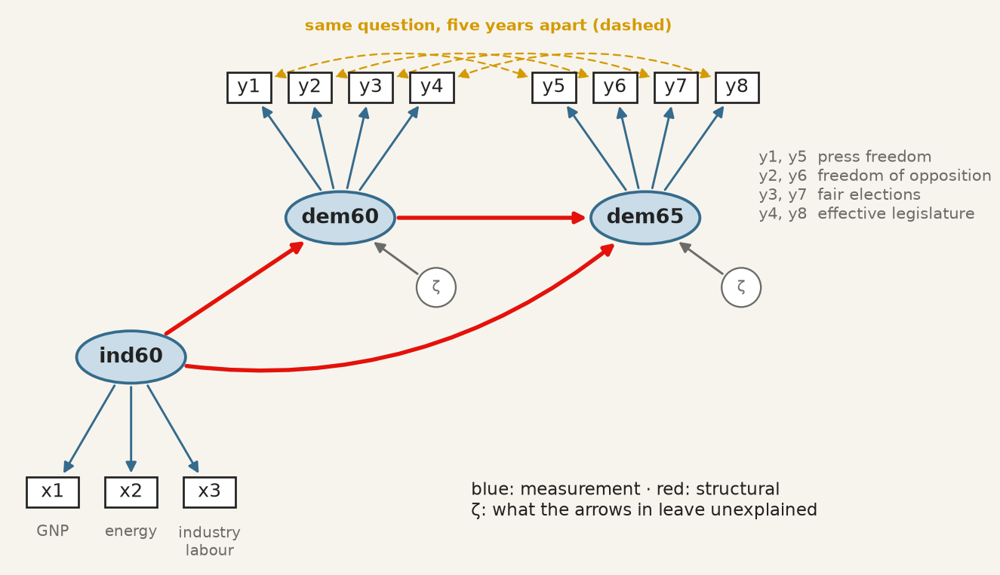
The democracy model before fitting. Blue arrows are measurement, red arrows structural, gold dashed arrows the same question asked twice.
All three operators now appear in one description:
Run it: measurement, structure and covariances in one model
The fitted democracy model, standardised. The numbers in the ζ circles are the unexplained shares, so R² is one minus each.
A country one standard deviation more industrialised in 1960 was 0.45 standard deviations more democratic that year. Democracy is very persistent (0.87), and industrialisation adds a smaller direct push to 1965 on top of that persistence (0.17, \(p = 0.015\)). Industrialisation explains 20% of the variance of democracy in 1960; with 1960 democracy it explains 91% of 1965. All eleven loadings exceed 0.69.
Direct and indirect effects. Industrialisation reaches 1965 by two roads: straight there, and through 1960 democracy. Along a road, standardised paths multiply.
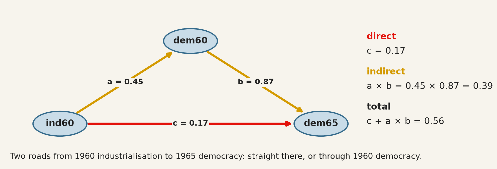
Two routes from ind60 to dem65: the direct path c, and the indirect route a × b through dem60.
Run it: direct, indirect and total effect
a = est.loc[(est["lval"] =="dem60") & (est["rval"] =="ind60"), "Est. Std"].iloc[0]b = est.loc[(est["lval"] =="dem65") & (est["rval"] =="dem60"), "Est. Std"].iloc[0]c = est.loc[(est["lval"] =="dem65") & (est["rval"] =="ind60"), "Est. Std"].iloc[0]print(f"direct c = {c:.2f}")print(f"indirect a * b = {a:.2f} * {b:.2f} = {a * b:.2f}")print(f"total c + a * b = {c + a * b:.2f}")
direct c = 0.17
indirect a * b = 0.45 * 0.87 = 0.39
total c + a * b = 0.56
Two-thirds of the total effect (0.39 of 0.56) runs through 1960 democracy: a mediation, in which dem60 carries most of what industrialisation does for dem65. The arithmetic is exact within the model; whether it is a causal decomposition depends entirely on whether the arrows are, which is the subject of the closing sections.
Every extra arrow needs a reason. The four same-question covariances changed the fit, and it is worth seeing by how much:
Run it: the model with and without the same-question covariances
without chi2 = 72.5 df = 41 p = 0.002 CFI = 0.953 RMSEA = 0.102
with chi2 = 50.8 df = 37 p = 0.064 CFI = 0.980 RMSEA = 0.071
With them, \(\chi^2\) no longer rejects (\(p = 0.064\)), CFI reaches 0.980 and RMSEA 0.071, and the structural paths barely move. They are legitimate here because the design predicts them. The same four lines added because they raise the CFI would be fitting noise — and correlated residuals added until a model passes are the most common way an SEM paper overstates its evidence.
Example 2 in four sentences. Once the same-question covariances that the design predicts are in, the model fits well, and every indicator measures its construct well. Industrialisation in 1960 goes with more democracy in 1960 and, mostly through it, in 1965. Democracy is highly persistent. Whether any of this is causal rests on the direction of the arrows, which the fit cannot check — the subject of the section “Good fit is not evidence that the model is correct” below.
9.9 Example 3 · Will this firm export?
The first two examples showed what SEM estimates. The third shows why it is worth the trouble, on data where the right answer is known.
The theory of planned behaviour(Ajzen 1991) holds that a decision-maker’s intention to act comes from three things: their attitude to the act, the subjective norms (what people who matter expect), and their perceived behavioural control (whether they feel able to do it). It is one of the most used theories in management research, and it travels naturally to international business: will a small firm’s managers intend to export?
Construct
Means
Survey items
attitude
exporting would be good for the firm
att1 “Exporting would be profitable” · att2 “…would be good for us”
norms
people who matter expect it
norm1 “Our board expects us to export” · norm2 “Our bank and peers do”
control
the firm feels able to
ctrl1 “We have the resources” · ctrl2 “We know how”
intention
the firm plans to export
int1 “We plan to export within two years” · int2 “…are preparing to”
Nothing here is a column you could observe; every construct has two items. The data are simulated: 400 managers, with intention built as \(0.5 \times \text{attitude} + 0.6 \times \text{norms} + 0.3 \times
\text{control}\) plus noise, and each item equal to its construct plus noise of its own. On real data you never know whether a method found the right answer. Here you do.
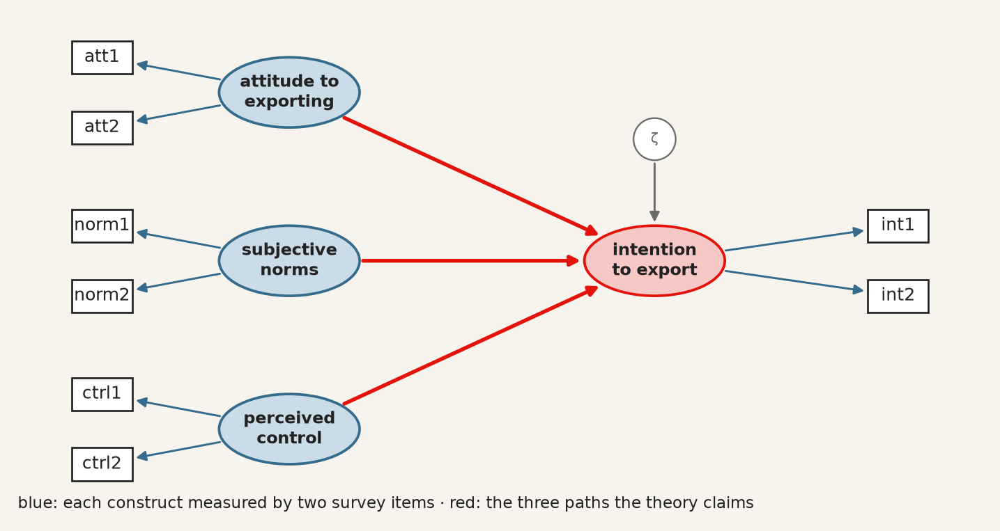
The exporting model before fitting. Each construct is measured by two items; the red arrows are the three claims of the theory.
The cell simulates the survey, fits the model, and then does what many applied papers do instead: averages each pair of items into a score and regresses one score on the others.
Run it: simulate the survey, fit the SEM, and compare with a regression on averaged items
lval op rval Estimate Est. Std
0 intention ~ attitude 0.44 0.46
1 intention ~ norms 0.62 0.64
2 intention ~ control 0.29 0.32
Value
chi2 18.168
DoF 14.000
chi2 p-value 0.199
CFI 0.997
TLI 0.995
RMSEA 0.027
Intercept 0.03
att 0.37
norm 0.51
ctrl 0.24
dtype: float64
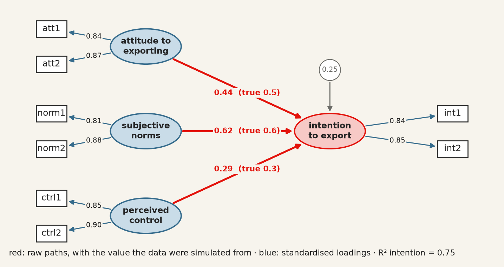
The fitted model. The red paths are raw estimates, beside the values the data were simulated from; the blue loadings are standardised.
SEM recovers the truth up to sampling noise — 0.44, 0.62 and 0.29 for 0.5, 0.6 and 0.3 — and fits almost perfectly (\(\chi^2 = 18.2\) on 14 df, CFI 0.997, RMSEA 0.027), as it should, since this model made the data. The regression on averaged items does not:
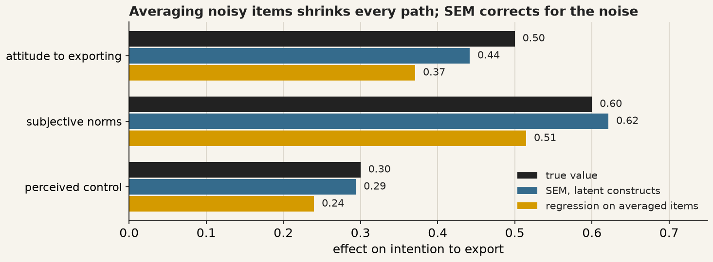
True paths, SEM estimates, and the regression on averaged items. Averaging shrinks all three paths toward zero.
Every regression coefficient is too small, by 15 to 25 percent. This is attenuation, and it was diagnosed before regression had its modern name (Spearman 1904b). A score made of noisy items is the construct plus noise, \(\bar x = \xi + \bar\delta\), and noise in a regressor pulls its coefficient toward zero by the score’s reliability,
Each item here has noise variance \(0.36\); averaging two halves it, so the reliability is \(1 / 1.18 = 0.85\) and the regression should find roughly \(0.85 \times (0.5, 0.6, 0.3) = (0.42, 0.51, 0.25)\), which is what it finds up to sampling noise. Noise in the outcome score adds variance but no bias; it is noise in the regressors that shrinks. Averaging more items raises the reliability and shrinks the bias, but never removes it. SEM removes it, because the measurement model separates each item into construct and error and the structural path is estimated between the constructs themselves — the claim made at the start of this chapter about estimating the two halves jointly, now checked against a known answer.
Example 3 in three sentences. All three constructs drive the intention to export, subjective norms most. SEM recovers the true paths; averaging the items and running a regression understates every one. Measurement error is not a nuisance to be averaged away: model it, and the structural paths come out right.
9.10 Why SEM, and not a regression?
The three examples can now be read against the alternative most papers use: a regression, linear (chapter 3) or logistic (chapter 4), on observed columns. A regression needs one column per variable and one outcome per model. SEM drops both requirements, and each example showed what that buys.
Linear or logistic regression
SEM
Seen in
Measurement error
assumes every regressor is measured without error; noisy ones shrink their coefficients
separates each item into construct and error
Example 3
Several items per concept
one column, so the items are averaged or summed: equal weights, no check that they measure one thing
one loading per item, and a test that the items belong together
Example 1
Chains of effects
one equation per model; a mediation takes several regressions and multiplying by hand
the whole system in one fit, with direct, indirect and total effects
Example 2
Testing the model
R² describes; nothing tests the structure
an over-identified model predicts every covariance, and \(\chi^2\) tests it
Example 1
Correlated errors
assumed away
written down when the design predicts them
Example 2
Comparing groups
the scale is assumed to mean the same everywhere
measurement invariance can be tested
below
Underneath all six is one difference. A regression treats the column as the concept; SEM treats the column as evidence about the concept, and says how good that evidence is.
A binary outcome.Did the firm export, yes or no? Logistic regression handles it with observed predictors only, and averaging survey items before a logit carries the same attenuation as Example 3. SEM handles binary and ordinal outcomes, and ordinal items, through a probit link with a categorical estimator (WLSMV, weighted least squares with mean- and variance-adjusted statistics, in lavaan or Mplus), so the predictors can stay latent. Logit coefficients live on the log-odds scale and probit ones on a latent normal scale, so across the two compare signs and significance, not sizes.
When a regression is enough. When every variable is a single, well-measured column — exports in dollars, GDP, distance — an SEM of observed variables returns the regression’s coefficients, and the extra machinery buys nothing. The same is true with one outcome and no mediation to decompose, when prediction rather than explanation is the goal (chapter 8), and when the sample is too small for SEM’s appetite of 200 or more. SEM is not a better regression. It is a regression that takes measurement seriously.
9.11 What the estimator assumes
Nothing above said how \(\theta\) is chosen. The default, in semopy as in lavaan, is maximum likelihood, and the likelihood it maximises is the multivariate normal one. That assumption is not decoration: the \(\chi^2\) statistic and every standard error in the output are derived from it.
When the data are not multivariate normal — and survey items with floor or ceiling effects rarely are — the failure runs in one direction, which is what makes it dangerous. The \(\chi^2\) statistic is inflated, so a model that fits is rejected. The standard errors are too small, so paths look more significant than they are. Non-normality does not make you cautious. It makes you confident.
The first check is one test per indicator, with functions you already have:
Run it: Shapiro–Wilk, skewness and kurtosis for each test
from scipy import statsfor t in tests: W, p = stats.shapiro(data[t])print(f"{t} W = {W:.3f} p = {p:.4f} skew = {data[t].skew():5.2f}"f" excess kurtosis = {data[t].kurt():5.2f}")
x1 W = 0.993 p = 0.1582 skew = -0.26 excess kurtosis = 0.36
x2 W = 0.970 p = 0.0000 skew = 0.47 excess kurtosis = 0.38
x3 W = 0.952 p = 0.0000 skew = 0.39 excess kurtosis = -0.89
x4 W = 0.983 p = 0.0011 skew = 0.27 excess kurtosis = 0.12
x5 W = 0.977 p = 0.0001 skew = -0.35 excess kurtosis = -0.53
x6 W = 0.954 p = 0.0000 skew = 0.87 excess kurtosis = 0.88
x7 W = 0.991 p = 0.0560 skew = 0.25 excess kurtosis = -0.27
x8 W = 0.981 p = 0.0004 skew = 0.53 excess kurtosis = 1.24
x9 W = 0.994 p = 0.3070 skew = 0.21 excess kurtosis = 0.34
Six of the nine tests reject univariate normality at the 1% level, though none is far from it: the skewness stays below 0.9 and the excess kurtosis below 1.3, small enough that maximum likelihood is a defensible default here. Passing one indicator at a time is not the assumption actually being made, which is joint. Mardia’s measures of multivariate skewness and kurtosis,
test it directly; under normality \(b_2\) has mean \(k(k+2)\), and every indicator can pass Shapiro–Wilk while the joint distribution fails both.
The answer to non-normality is not to abandon the model but to change the estimator. Robust maximum likelihood — MLR, resting on the Satorra–Bentler scaled \(\chi^2\) — keeps the ML point estimates and rescales the test statistic and the standard errors by the non-normality actually observed. For ordinal indicators, WLSMV treats a five-point item as a coarsened continuous variable rather than pretending its categories are numbers. Either way, report the estimator alongside the fit.
9.12 Good fit is not evidence that the model is correct
This is the chapter’s most important section and the objective most often recited without being understood.
A model that fits well has demonstrated one thing: the covariances it implies are close to the covariances observed. It has not demonstrated that its causal structure is right, because other models — with different, even opposite, causal claims — can imply exactly the same covariance matrix. They are called equivalent models, they exist for almost every model anyone fits, and no amount of data distinguishes them.
Run it: industry causes democracy, and democracy causes industry
Identical \(\chi^2\), identical degrees of freedom, identical CFI and RMSEA — for two models asserting opposite causal directions. No fit index can prefer one, because fit indices measure distance from the observed covariances and both reproduce them equally.
This is the same structural fact as chapter 7’s rotation indeterminacy, in a more dangerous costume: there, the alternatives were obviously arbitrary and everyone knew a rotation had been chosen; here, the alternative is a different theory of how the world works, and the output looks like a result.
The consequence for practice is exact. The direction of the arrows is an assumption you supply, and the fit statistics cannot audit it. What can audit it is subject knowledge, temporal order — a cause cannot follow its effect, which is why the 1960-to-1965 arrow is more defensible than the 1960-to-1960 one — and design, which is what chapters 10 and 11 are about.
9.13 What SEM does not fix
It does not make cross-sectional data longitudinal. Estimating a path from \(A\) to \(B\) measured at the same moment identifies a direction only because you declared one.
It does not remove confounding. An omitted common cause of two constructs biases the path between them exactly as it biases a regression coefficient. The latent variables absorb measurement error, not confounders.
It is demanding of sample size. With a small \(n\) the \(\chi^2\) test has little power to reject a wrong model, and the fit indices are themselves unstable — so “good fit” in a small sample is the weakest possible evidence. Bollen’s 75 countries are a small sample, and the good fit of the democracy model should be read with that in mind.
Comparisons across groups require an extra assumption. Comparing a construct between, say, countries presumes it is measured the same way in each. That is measurement invariance, it is testable by fitting the model with loadings constrained equal across groups, and comparing means without testing it can manufacture a difference out of a translation (Cheung and Rensvold 2002). The two schools above, where one modification helped in one and not the other, are a small instance of the same problem.
9.14 The recipe
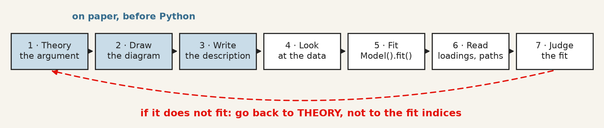
Seven steps from theory to judging the fit. When the model does not fit, the arrow goes back to the theory, not to the fit indices.
Step
What you do
In Python
1–3
argue which indicators measure which construct, draw it, write one line per ellipse
a string with =~, ~, ~~
4
look at the correlations: can you see your groups?
data[cols].corr(), plt.imshow
5
fit
semopy.Model(description), .fit(data)
6
read loadings and paths, standardised
.inspect(std_est=True)
7
judge the fit, all four indices
semopy.calc_stats(model)
9.15 A short review of the literature
The method has two ancestors that met in the 1970s. Wright (1934) developed path analysis in genetics, with the diagram as the model and the decomposition of correlations along paths; Spearman (1904a) and the factor-analytic tradition supplied latent variables measured by indicators. Jöreskog (1971) combined them into the general covariance-structure model that all current software implements, Bollen (1989) wrote the textbook that taught a generation to use it — the political-democracy model above is its running example — and Rosseel (2012) gave the modern open-source implementation whose syntax semopy follows in Python. Ajzen (1991)’s theory of planned behaviour, the third example, is among the theories most often tested this way in management research, and the attenuation that SEM corrects was first diagnosed by Spearman (1904b), the same year he proposed the common factor.
Assessment of fit is where the applied literature has moved most. Bentler (1990) introduced the comparative fit index and Browne and Cudeck (1992) the RMSEA, both as responses to the chi-square test’s sensitivity to sample size. Hu and Bentler (1999) proposed the cut-offs now universally quoted — CFI and TLI above 0.95, RMSEA below 0.06 — while cautioning against exactly the mechanical application that followed.
MacCallum and Austin (2000) reviewed a decade of applied practice and found the recurring faults to be the ones this chapter warns about: models modified until they fit and then reported as though specified in advance, equivalent models never considered, and causal language attached to cross-sectional designs. Cheung and Rensvold (2002) supplies the invariance testing that any cross-group comparison requires and most omit.
9.16 What to report
The model, as a diagram or as its description. Every arrow is a claim; a reader cannot evaluate claims they cannot see.
How the latent scale was set — a fixed loading or a fixed variance — so nobody misreads the parameter without a standard error.
Standardised loadings for every indicator, not only the significant ones, and what you did about weak items. Dropping an indicator after seeing its loading is a data-dependent decision; say so.
The chi-square with its degrees of freedom and p-value, alongside CFI, TLI and RMSEA, and the convention you judged them against. Reporting only the indices that pass is the single most common failure.
Whether the model was modified after fitting, and on what grounds. A model reached through modification indices or residuals is exploratory whatever its fit, until it holds on data it has not seen.
At least one equivalent model, named. If you cannot think of one, that is a reason to look harder rather than evidence there is none.
What the arrows do not license. Direction was assumed, not discovered. With cross-sectional data the model estimates the strength of a relationship under a causal structure you supplied, and a good fit is consistent with that structure being wrong.
Browne, Michael W., and Robert Cudeck. 1992. “AlternativeWays of AssessingModelFit.”SociologicalMethods & Research 21 (2): 230–58. https://doi.org/10.1177/0049124192021002005.
Cheung, Gordon W., and Roger B. Rensvold. 2002. “EvaluatingGoodness-of-FitIndexes for TestingMeasurementInvariance.”StructuralEquationModeling: A MultidisciplinaryJournal 9 (2): 233–55. https://doi.org/10.1207/S15328007SEM0902_5.
Fornell, Claes, and David F. Larcker. 1981. “EvaluatingStructuralEquationModels with UnobservableVariables and MeasurementError.”Journal of MarketingResearch 18 (1): 39. https://doi.org/10.2307/3151312.
Henseler, Jörg, Christian M. Ringle, and Marko Sarstedt. 2014. “A New Criterion for Assessing Discriminant Validity in Variance-Based Structural Equation Modeling.”Journal of the Academy of MarketingScience 43 (1): 115–35. https://doi.org/10.1007/s11747-014-0403-8.
Hu, Li‐tze, and Peter M. Bentler. 1999. “Cutoff Criteria for Fit Indexes in Covariance Structure Analysis: Conventional Criteria Versus New Alternatives.”StructuralEquationModeling: A MultidisciplinaryJournal 6 (1): 1–55. https://doi.org/10.1080/10705519909540118.
Jöreskog, K. G. 1971. “StatisticalAnalysis of Sets of CongenericTests.”Psychometrika 36 (2): 109–33. https://doi.org/10.1007/BF02291393.
MacCallum, Robert C., and James T. Austin. 2000. “Applications of StructuralEquationModeling in PsychologicalResearch.”AnnualReview of Psychology 51 (1): 201–26. https://doi.org/10.1146/annurev.psych.51.1.201.
Rosseel, Yves. 2012. “<B>lavaan</b> : An <i>r</i> Package for StructuralEquationModeling.”Journal of StatisticalSoftware 48 (2). https://doi.org/10.18637/jss.v048.i02.
Spearman, C. 1904a. “"GeneralIntelligence," ObjectivelyDetermined and Measured.”TheAmericanJournal of Psychology 15 (2): 201. https://doi.org/10.2307/1412107.
———. 1904b. “TheProof and Measurement of Association Between TwoThings.”TheAmericanJournal of Psychology 15 (1): 72. https://doi.org/10.2307/1412159.